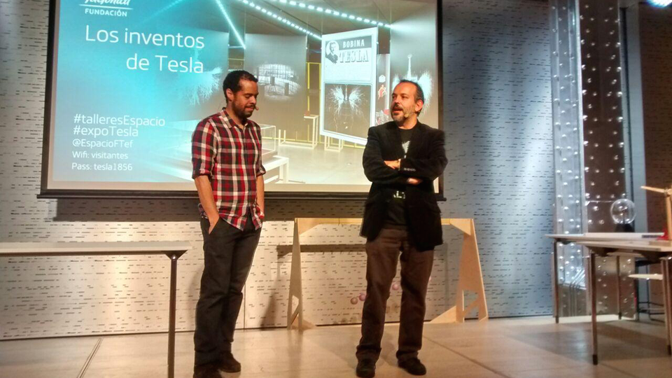
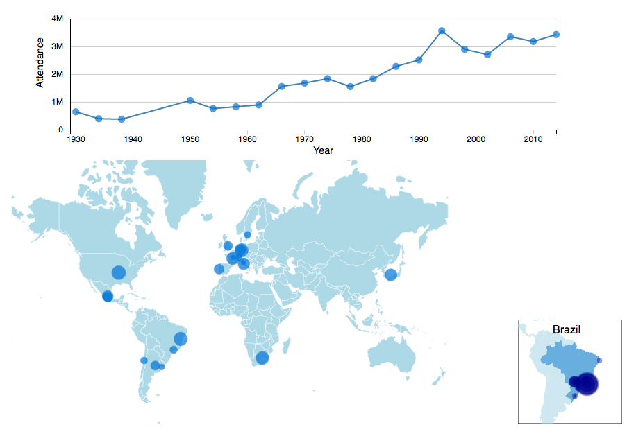
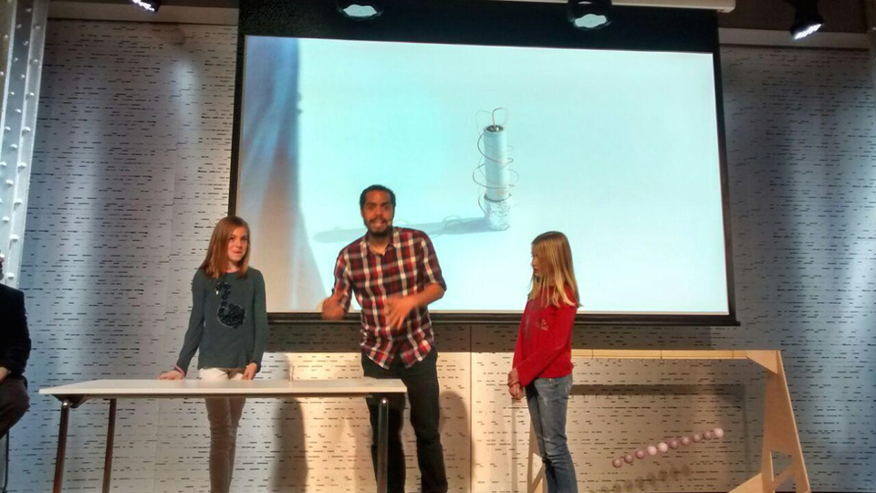
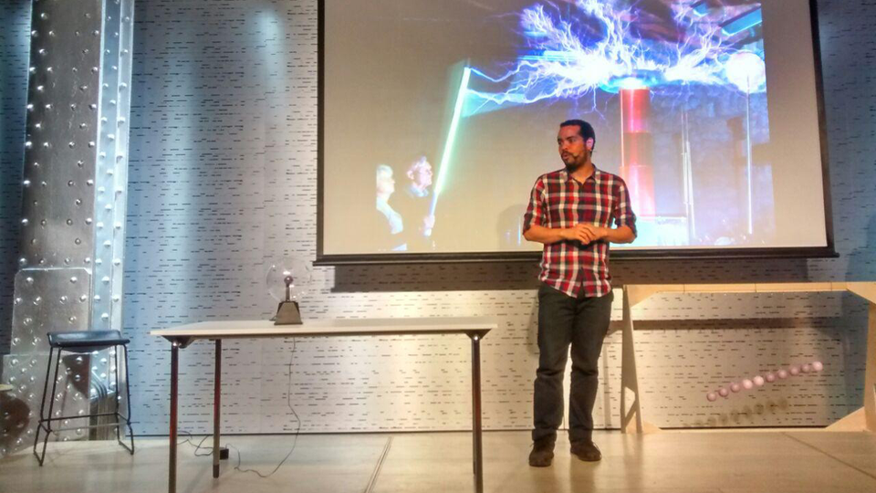
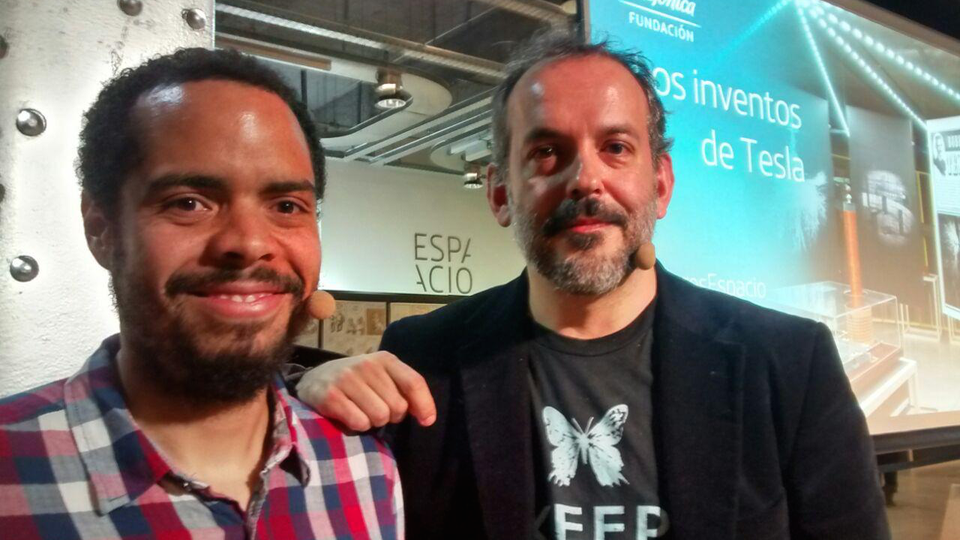
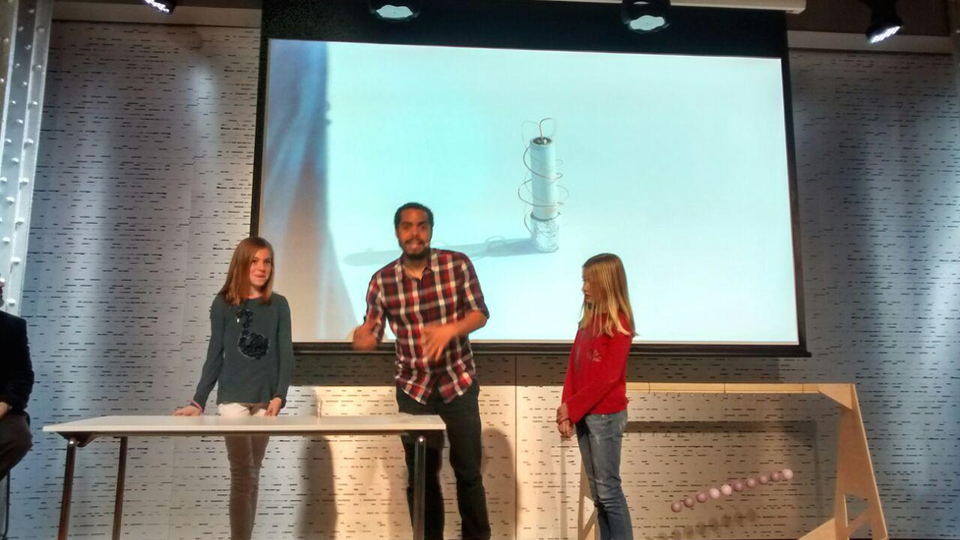
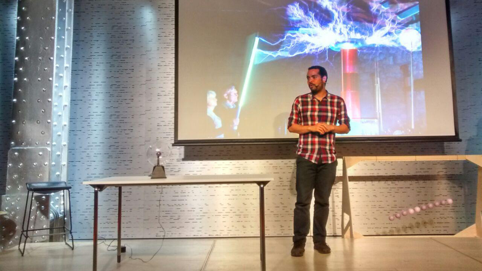
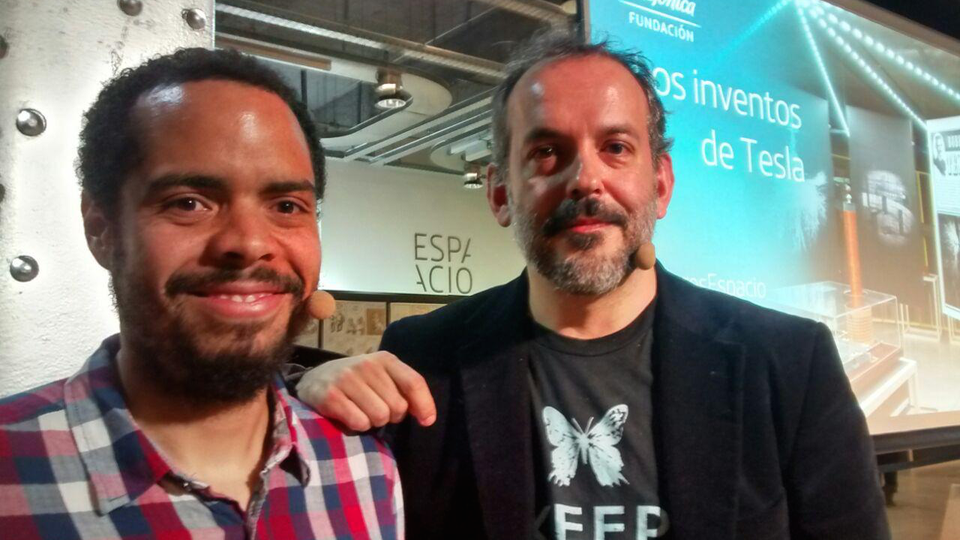

I'm a blend of a researcher, a developer and a maker. Formally educated in Physics, I spent some years in research and teaching at the university. Some years ago, I started to experiment with creative and open technologies.
Nowdays, I'm involved in different projects related to programming, electronics and digital fabrication, in technologies such as: Python, Javascript, HTML/CSS, Processing, OpenFrameworks, Arduino, 3D Printing, Laser Cutiing and CNC.
For more information you can download my resume here
Services
General topics of my work.
Education & Research
I have experience in teaching and research at the university, and other non academical enviroments. I usually teach courses such as: Creative Coding with Processing, Creative Electronics with Arduino and 3D printing.
Programing
I have some experience in programming with the lenguajes or frameworks: Python, Javascript, HTML/CSS, Processing, OpenFrameworks and Arduino.
Within my work I highlight the development of simulation programs, interactives instalations and data analysis.
Digital Fabrication
I have experience in project development, prototype design, consultancy and teaching at the FabLab. This work is related to 3D printing, Laser Cutting, CNC in general and electronic prototyping.
Contact me soon!
Networks where you can find me
Visions Project
Visions Project is an interactive device that allows visualization of psuedo 3-D objects.Those objects are projected onto a pyramidal structure with a LCD monitor, and due to the special geometry of the structure, any user located around the pyramid is able to see a 3·-D image floating inside of the pyramid for any observer located around the pyramid. The structure uses a Kinect camera in order to capture the external movement of the people and to allow a real time interaction user-object.
The project was conceived as a DIY (do it yoursef) portable open software project. The structure is light and easy to build and dismantle. The information to create it, build it and make it work is shared with a Creative Commons license.
The project was developed by Francesca Mereu and Javier Villarroel.
Big-Games was a workshop celebrated at MediaLab Prado in Madrid. In the workshop, teams develop prototypes of games in Processing for a big screen of 15mx10m. Our team developed some games, which highlights a version of Pong.
This project aims to bring attention about recycling habits by hacking existing trashs bins. We found an old bin at Dublin streets that had been abondoned many years ago and was not in use any more. We converted it into a recycling bin with a touch of technology. We installed sensors to measure the amount of recycling material going inside the bin and to react when someone approaches to it. The bin interacts with people when they recycle and, at night time, it shows the visualization of the information prevously collected by the sensors.
The project was deveploped at the "Interactivos?12 Dublin" workshop organized by Medialab-Prado Madrid and Science Gallery Dublin. Both institutions are members of the StudioLab European Group. The workshop was carried out at the Science Gallery in Dublin.
Team Members: Martina Kalogjera, Joaquín Rodríguez, Charlotte Barrois de Sarigny, Reza Safavi, Evangelos Kapros, Javier VIllarroel.
This proyect was commisioned to be presented in the coffee break of the event TEDxGuimaraesWoman (Dec 1st, 2012, Guimaraes, Portugal).
The visualization consists on a dynamical graph. Before the event, each participant wrote three words in the registration form that described herself/himself. The visualization shows those three words represented by circles of different colors. Each word is connected with the rest of the words written by the same participant and the size of the circle is proportional to the number of times the word is repeated by different participants. The order in which the words appear in the image follows the registration order.
As the visualization shows the most common words describing the participants and the connections between them, somehow, the visualization describes the personality of the event and shows the relationship between the participants.
Space Between
The Space Between is an interactive installation where user's silhouettes are projected on a screen in different colours while little particles move freely around the entire screen. When those particles go through a silhouette, they take its colour and conserve it even after going out of the silhouette and entering into a new one.
This installation is a metaphor of how abstract Portfolio like ideas move between people through the space, and how they evolve in the process.
This project was developed in Processing and used a Kinect camera. It was commisioned to be presented in the coffee break of the event TEDxGuimaraesWoman (Dec 1st, 2012, Guimaraes, Portugal).
In this project, we want to develop an open hardware and software controller to transfer any image or video to a grid of LEDs. The grid consists on an array of RGB addressable LEDs that can be directly controlled by a digital signal. Moreover, different grids can be attached to create a bigger display.
In the first phase of the project, we've developed a prototype that transfers the silhouettes captured by a Kinect camera to the grid. This prototype was created with Procesing and Arduino.
Work in progress.
GraviTrackMe
This is a micro interactive project created for MediaLab-Prado's digital facade in the showcase of interactive sketches "#codethesquare". This event was carried on within the context of the contemporary art fair ARCO (Madrid, 2013).
In the skecth coloured stars move freely in the screen. When people enter into the square, they are represented in the screen by crosses. These crosses attract the stars producing an interactive dance on the screen.
Smart Market Experience is a interactive device developed for retail purposes. It consists in a screen that shows the store cataloge and a hand traking software that allows to users move a cursor int the screens. Smart Market permit looking for detailed information about the products and buy it.
This system was developed in Processing and it uses the Kinect camera like sensor.
This project was developed by ThinkBig-Factory company (Chema Diaz del Corral (Principal coder), Javier Villarroel and Ion Cuervas).
Info Shell
Info Shelf Experience is the name of a interactive product for retail purpose. This allow show detail information about shoes arranged on the shelf buy the client. Information such as: sizes available, colors, materials, recomended uses, etc.
The software was developed on Processing and it uses 3 Arduinos with NFC shield in order to detect the shoes when they are placed on the shelf.
This product was developed by "Think Big Factory" company for the outdoor store Barrabes.
eMotions
eMotions is a serie of interactive applications products developed for different context such as: educational games, ludic enviromental, retail catalogue and others. eMotions was developed on "Processing" with the Kinect camera. This work was carried out for the company of software development Easy-Code.
The video shows a presentations of different applications showed in the coffe break of the TEDx on Madrid (November 2013).
Inventos de Tesla

"The inventions of Tesla" was a public presentation about the physicist Nikola Tesla. The talk revolves about some anecdotes of the childhood of Tesla and invited the public to participate in recreation of some experiments.
In Xmas 2014, an interactive ludic application was developed for interact with people from the street. "eMotions" allow that people of any age play for a little time while they walk around the street.
This application was developed for Utopicus, a coworkers space. They found that many people entered to the place to ask about what they do.
Creative Technologies in the Classroom (CTC) is a project with the aim of introduce basic concepts in programming, electronics, and mechanics for schools. The project challenges traditional methods of learning technology by encouraging teachers and students to use the web as the main tool. The CTC project is a toolbox created by Arduino that comprised of more than 20 experiments; an online source for documentation; and a collaborative space where teachers can share their projects and can get technical help. This project has been successfully implemented in the Region of Castilla La Mancha, Madrid, Barcelona and Ecuador.
I participate like local coordinator and technical support for the issue of the project in Madrid and Barcelona.
Travesía por los estados de la palabra" is a art installation that shows a journey through different states of the words. This installation celebrates the cultural union between Spain and Colombia through different creative technologies such as: 3D printing, creative coding and big data. During the exhibition, 50 3D printers print over 10,000 words from different works of writer Gabriel Garcia Marquez, placed forming a sea of words.
This project is framed in the international art fair ARCO 2015 in Madrid where Colombia was the guest country. I was part of the team responsable of the 3D printing.I participated in the team that takes care of everything related to the printing of words.
The fablab open call, is a invitation for develop projects in the FabLab in MediaLab Prado during 6 months.
Some projects accepted: MicroArquitectura, a kit of pieces for build geometries for kids, Isolation Forniture, a catalogue of futuristic fornitures created by 3D printing, Portatil Desktop, a portatil desktop design for be realized by milling machines without any screw or nail.
In this project I participated like a technical consultant for the digital fabrication process. I coordinated the teams, teach the different technologies and gave advises on the design of the projects.
Objetos Comunes (Objects in Commun) is a exposition of collaborative projects, presented in MediaLab Prado in fall 2015. This exposition investigates questions related to the accesibility to the open projects, the scale production of a community and the relationship between the artesan and the digital process.
In this work, I have participated in the development of many projects like technical consultant from digital frabication process.
My Maker is a 3D printer based on a Ultimaker original Plus. before, I had built a RepRap Prusa I3, however, that machine present some practical issues. Basically, MyMaker is a box, this box have all the mechanics and electronics together and better located, protected from dust and accidental impacts.
MyMaker is a prototype not finished yet. Work in progress.
Word Cup Interactive Attendance Map

This is an example of how to interact charts and map in D3.js. The visualization shows the attendances of the worl cup footbal soccer games by year and contry
Music software allows music creation using the brain waves of the user; because the music is generated by the brain wave through the Brain Computer Interface (BCI) and a composition with a sequencer, but is not a simple reactive interface, it creates a deep feedback communication between the creation and the creator mind.
 




